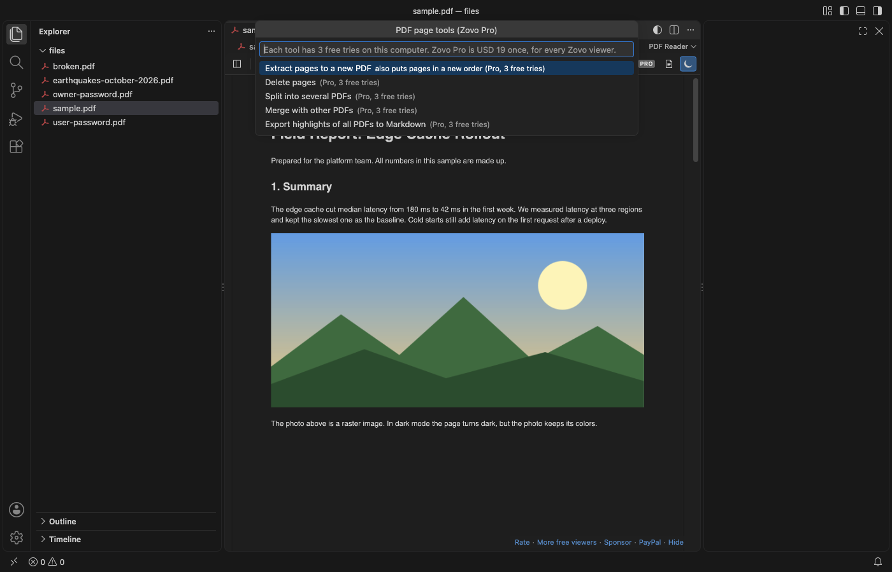

Open files in VS Code and Cursor / Office files
Extract pages from a PDF without uploading it
Online PDF tools want the file uploaded. To extract pages on your own computer, install PDF Viewer by Zovo in VS Code, open the PDF and click the page tools button in the toolbar. Pick "Extract pages to a new PDF" and type the pages, such as 1-3, 7, 10-. The order you type is the order you get. Split and merge are in the same menu. Reading the PDF is free; the page tools are Zovo Pro (USD 19 once) with 3 free tries each.
Free, MIT license. Extension ID zovo.pdf-viewer-dark, version 0.3.1. Needs VS Code 1.90.0 or newer.

Steps in VS Code
- Install PDF Reader from the Marketplace, or press Ctrl+P (Cmd+P on macOS) and run
ext install zovo.pdf-viewer-dark. - Click the PDF in the Explorer. It opens in the viewer.
- Click the page tools button (the stacked pages icon) in the toolbar, or run "PDF: Page Tools (Pro)..." from the Command Palette.
- Pick "Extract pages to a new PDF" and type the pages:
1-3, 7, 10-.5, 1-4moves page 5 to the front. - Pick where to save the new PDF. The source file is not changed.
Steps in Cursor, Windsurf or VSCodium
- Open the Extensions view with Ctrl+Shift+X (Cmd+Shift+X on macOS).
- Search for
zovo.pdf-viewer-darkand click Install. Cursor, Windsurf and VSCodium install from Open VSX, where it is published aszovo/pdf-viewer-dark. - If your editor has no gallery, download the .vsix from the Open VSX page and run "Extensions: Install from VSIX...".
- Then use it the same way as in VS Code.
What PDF Reader handles
- Extract pages in any order, delete pages, and split a file every N pages, one file per page, or at ranges you type.
- Merge with other PDFs, with this file first or last. A broken or password-protected input is named before anything is written.
- Links, the outline and form fields come along. A PDF with a password keeps it.
- Everything runs on your computer with the same pdf.js that shows the page. Nothing is uploaded.
What it does not do
- It does not rotate pages yet, and it does not edit text or images on a page.
- Big files are loaded fully into memory. Above 200 MB it asks first.
Free and Zovo Pro
Free, and staying free: reading, dark and sepia pages, search, the outline and thumbnails, highlights, Copy as Markdown and page links.
Zovo Pro adds these tools to PDF Viewer. Each one works 3 times on your computer before it asks for a license. Nothing about Pro shows when you open a file: no popup, no countdown, no banner.
- Extract pages to a new PDF, in the order you type.
- Delete pages and save the rest as a new PDF.
- Split into several PDFs: every N pages, one per page, or at your ranges.
- Merge with other PDFs.
- Export the highlights of all your PDFs to one Markdown file, grouped by file, with page links.
Zovo Pro costs USD 19 once. It is not a subscription, and one purchase covers every Zovo VS Code extension. Today it also covers the Pro tools in Hex Viewer, Postgres & MySQL Query Client and DOCX Viewer, and Pro tools added to other Zovo extensions later.
Two ways to unlock it:
- GitHub Sponsors: pick the "$19 one time" tier. Then, in VS Code, click a Pro tool and pick "Unlock with GitHub Sponsors" (or type "GitHub Sponsors" in the Command Palette) and sign in with the same GitHub account. A monthly sponsorship of USD 10 or more that is still running counts too.
- PayPal, no GitHub account needed: send USD 19 by PayPal with "Zovo Pro" in the note, then post the transaction ID with the Zovo Pro key form (a public GitHub issue, so post only the ID). The license key goes to the email address of your PayPal account within a day. Click a Pro tool and pick "I have a license key" (or type "license key" in the Command Palette) and paste it. The key is checked on your computer, with no network call.
A team of 5: USD 59 once by PayPal, with "Zovo Pro Team" in the note. Every rule and every Pro tool is on the Zovo Pro page.
In JetBrains IDEs (IntelliJ IDEA, PyCharm, WebStorm, CLion and others)
- PDF Viewer. Views PDF files in IntelliJ-based IDEs (413,920 downloads). It does not extract pages. Zovo has no JetBrains PDF plugin.
Other options
- qpdf or pdftk.
qpdf in.pdf --pages . 1-3,7 -- out.pdfextracts pages on the command line. Free. - macOS Preview. Drag thumbnails out of the sidebar, or delete pages and save as a new file. Free on a Mac.
- Adobe Acrobat. Organize Pages extracts, splits and merges. It needs a paid Acrobat plan.
- Online PDF sites. Free and quick, but the file is uploaded to someone else's server.
Install counts and Open VSX status were checked on 9 November 2026. Descriptions in quotes are the extensions' own.
Questions
Can VS Code extract pages from a PDF?
Not by itself. PDF Viewer by Zovo adds it with its page tools, which run inside VS Code on your computer.
Is it free?
Reading, dark mode, search, the outline and highlights are free. Extract, delete, split, merge and the all-highlights export are Zovo Pro, USD 19 once, with 3 free tries each.
Does it change my original PDF?
No. It writes a new file. The source is changed only if you pick it in the save dialog.
More about PDF Reader
Read the PDF Reader page for every feature and setting, or the source code on GitHub.
Related guides
- Read PDFs in dark mode in VS Code
- Open a PDF in Cursor
- Open a PDF file in VS Code
- Merge PDF files in VS Code, offline
Zovo Pro and support
Zovo Pro: USD 19 once, every Zovo viewer. It turns on the Pro tools in this extension and in the other Zovo extensions you use. The free features stay free.
After a card payment your license key shows on the next page. Paste it with the command "Zovo Pro: Enter a key".
You can also support the work with no Pro:
Need your format supported?
Open a format request with a sample file, and I reply there whether it can be done. For USD 299 once, through this GitHub Sponsors tier, I add your file format or a missing feature to this extension, with tests, within 7 days.